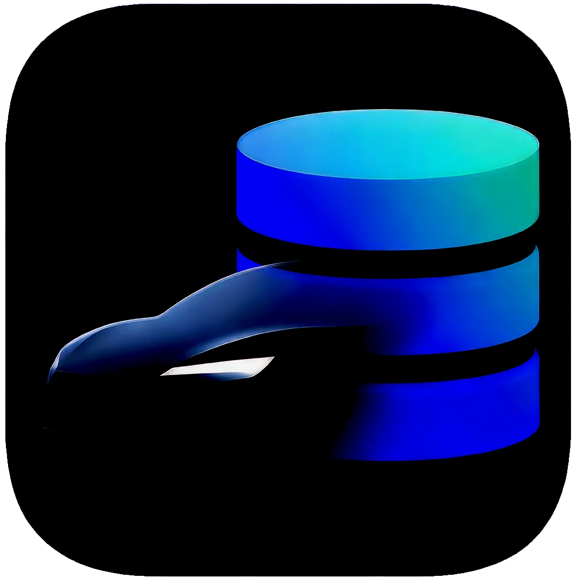

3D route replay
Interactive maps with flyover views, multiple rendering modes, and full journey analysis across your drive history.

TeslatlasTeslatlas syncs your TeslaMate data locally via direct PostgreSQL or MyTeslaMate API, powering 3D route replay, battery health predictions, charge diagnostics, parked drain insights, and offline-first analysis after sync.
Capabilities
Battery health predictions, charge diagnostics, 3D route replay, parked drain insights where enough local history exists, and prepared maps from local data that never leaves the device.
Interactive maps with flyover views, multiple rendering modes, and full journey analysis across your drive history.
Machine learning estimates for battery degradation powered by your local driving and charging history.
Charge doctor findings, cost tracking, efficiency trends, and parked drain detection across your full session history.
Connect directly to TeslaMate PostgreSQL, or use the MyTeslaMate API with bearer, basic, or Cloudflare Access auth.
Rust builds local route and raster artifacts so six-month and one-year views open without asking TeslaMate again.
Core analytics and prepared maps work from the local mirror after sync. Export backups, support bundles, or public share files with VIN, time, and location redaction.
Privacy
TeslaMate PostgreSQL or MyTeslaMate API stays the source of truth. Sync Health shows source, freshness, row counts, and confidence labels while Teslatlas mirrors into local SQLite without writing back.
Teslatlas connects directly from your device to your own TeslaMate database or to a MyTeslaMate API endpoint that you configure. Vehicle data does not pass through MAGRATHEAN UK LTD. Cached data, computed predictions, preferences, and credentials stay local on your device.
Architecture
SwiftUI renders overview, drives, battery, and trip views across Apple platforms. Rust handles sync, SQLite, route optimisation, and generated map artifacts. TeslaMate PostgreSQL stays the source system.
SwiftUI owns onboarding, connection setup, settings, and the analytics screens across iPhone, iPad, and Mac Catalyst.
Rust handles PostgreSQL sync, local SQLite writes, route-heavy transforms, and the slower map preparation tasks that do not belong on the UI thread.
The local mirror keeps everyday browsing, filters, and offline views responsive once the first sync is done.
Your TeslaMate PostgreSQL database stays authoritative, with Teslatlas validating connectivity and then reading into a faster local working set.